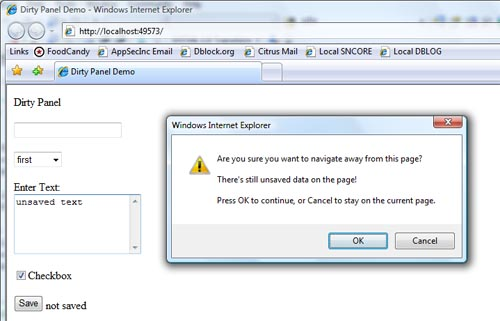

Title: Dirty Panel Extender (ASP.NET AJAX) Author: Daniel Doubrovkine Email: dblock@dblock.org Member ID: 913212 Language: C#, ASP.NET 2.0, Microsoft AJAX 1.0 Platform: Windows, .NET 2.0 Technology: ASP.NET AJAX Level: Intermediate Description: A dirty panel extender implementation with ASP.NET AJAX control toolkit. Section Suggest a section... SubSection Suggest a subsection...

My website is a rich social network that offers users many web forms to fill. For example, users can post articles and edit lengthy profiles. Often they click on a link that takes them away from the page or press the wrong key (eg. backspace that navigates to the previous page). In both cases their changes get lost. And it is always frustrating to have to re-enter the same text twice. Wouldn't it be nice to warn the user that he has unsaved data and give him an opportunity to cancel, then save his data?
This is a Panel Extender for ASP.NET AJAX 1.0 that automatically detects if any input control inside it was changed and shows an alert if the user tries to leave the page before saving the data.
This article uses the same techniques as described in this prior AJAX DirtyPanel article, but implemented as a panel extender for Microsoft ASP.NET AJAX 1.0. The extender model offers a very clean and straightforward solution described in the implementation section below.
Assuming you have an ASP.NET AJAX enabled site that uses the Ajax Control Toolkit, simply add the DirtyPanelExtender project to your solution, register the extender on the .aspx page and add an extender to a panel.
<%@ register assembly="DirtyPanelExtender" namespace="DirtyPanelExtender" tagprefix="dp" %> ... <dp:dirtypanelextender id="demoPanelExtender" runat="server" targetcontrolid="demoPanel" onleavemessage="There's still unsaved data on the page!" /> <asp:updatepanel id="demoPanel" runat="server"> ...
Creating an extender skeleton is described in this walkthrough. The basics include:
The window.onbeforeunload callback is the essential hook that will
trap closing of the window. It is possible to prompt the user before the window
is unloaded.
window.onbeforeunload = function (eventargs)
{
if(! eventargs) eventargs = window.event;
eventargs.returnValue = "You have unsaved data. Are you sure you want to close this window?"
}
See
MSDN for detailed information about the window.onbeforeunload
handler.
The implementation supports multiple dirty panels by creating an array of panels.
var DirtyPanelExtender_dirtypanels = new Array()The panel initialization code that will add itself to this array.
initialize : function() {
DirtyPanelExtender.DirtyPanelExtenderBehavior.callBaseMethod(this, 'initialize');
DirtyPanelExtender_dirtypanels[DirtyPanelExtender_dirtypanels.length] = this;
}
It is now possible to iterate through the array in JavaScript.
for (i in DirtyPanelExtender_dirtypanels)
{
var panel = DirtyPanelExtender_dirtypanels[i];
...
}
Every panel will expose a panel.isDirty that will return true if any
of the existing form fields has changed (making the panel "dirty"), plus an
OnLeaveMessage property to store the message to show. The hooking will only
need to happen for a dirty panel.
window.onbeforeunload = function (eventargs)
{
for (i in DirtyPanelExtender_dirtypanels)
{
var panel = DirtyPanelExtender_dirtypanels[i];
if (panel.isDirty())
{
if(! eventargs) eventargs = window.event;
eventargs.returnValue = panel.get_OnLeaveMessage();
break;
}
}
}
Determining whether the panel is dirty is the hardest part. First, there's no native
support for whether an input box or other editable control has changed. Old values
must be tracked and compared. Original values are saved in a hidden field in
OnPreRender
protected override void OnPreRender(EventArgs e)
{
ScriptManager.RegisterHiddenField(this, string.Format("{0}_Values", TargetControlID),
String.Join(",", GetValuesArray()));
base.OnPreRender(e);
}
The implementation of GetValuesArray simply iterates through child
controls and saves those that are editable.
Note that it now looks trivial to implement a way to reset the dirty flag, for example
when the user presses the Save button. It is only necessary to reset the
saved values. Unfortunately things are not that simple, especially if the exntender
is used with an UpdatePanel. You must emit JavaScript within that panel
that will reset the value of the hidden field.
public void ResetDirtyFlag()
{
ScriptManager.RegisterClientScriptBlock(TargetControl, TargetControl.GetType(),
string.Format("{0}_Values_Update", TargetControlID), string.Format("document.getElementById('{0}').value = '{1}';",
string.Format("{0}_Values", TargetControlID), String.Join(",", GetValuesArray())), true);
}
The isDirty function deconstructs the hidden field value and compares
the current form values one-by-one.
isDirty : function() {
var values_control = document.getElementById(this.get_element().id + "_Values");
var values = values_control["value"].split(",");
for (i in values) {
var namevalue = values[i];
var namevaluepair = namevalue.split(":");
var name = namevaluepair[0];
var value = (namevaluepair.length > 1 ? namevaluepair[1] : "");
var control = document.getElementById(name);
if (control == null) continue;
// bug: doesn't work for RadioButtonList
if (control.type == 'checkbox' || control.type == 'radio') {
var boolvalue = (value == "true" ? true : false);
if(control.checked != boolvalue) {
return true;
}
} else if (control.type == 'select-one') {
if(control.selectedIndex != value) {
return true;
}
} else {
if(control.value != value) {
return true;
}
}
}
return false;
}